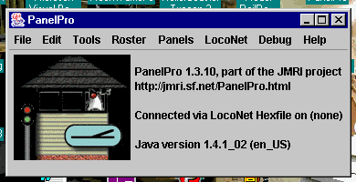
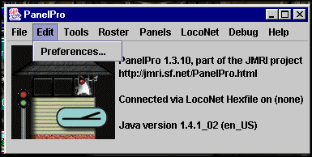
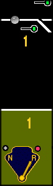
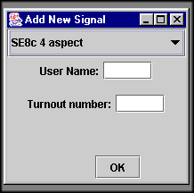
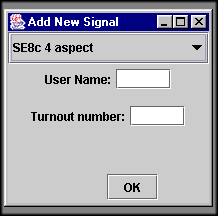
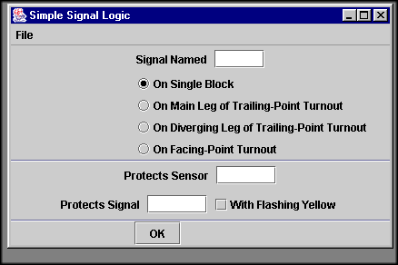

JMRIDEMO PanelPro Clinic
The first step in using the program is to download the latest version from the JMRI website. The current version as of 3/16/2004 is 1.3.10 it is available at:
Download links:
Please use these links for
downloading, including the "?download" at
the end. That adds to SourceForge's
advertising statistics, which
makes them happy to host
our stuff.
MacOS X:
http://prdownloads.sourceforge.net/jmri/JMRI.1.3.10.hqx?download
Windows:
http://prdownloads.sourceforge.net/jmri/JMRI.1.3.10.exe?download
Linux:
http://prdownloads.sourceforge.net/jmri/JMRI.1.3.10.tgz?download
MacOS 8/9 "Classic":
http://prdownloads.sourceforge.net/jmri/JMRI.1.3.10.Classic.hqx?download
Changes since test version
1.3.9:
Soundtraxx DSD, DSX, LC
decoders updated by Robin Becker
Bug where decoders that
differ only in family name, esp. certain NCE
decoders, could not be properly
selected.
Roco LocoMouse has now been
tested to work (Paul Bender)
QSI decoder in the Lionel
Challenger now identifies (Walter Thompson)
Additional QSI models added
using identification info provided by
Randy Jones.
Tooltips now displayed in
the decoder-selection tree from the
comments in the definition
files (Jack Shall)
Tooltips added to some NEC,
Digitrax decoders (Jack Shall)
New TCS M1 decoder definition
contributed by Eddie Delozier.
Lenz sensor inputs now supported
(Paul Bender)
Problem with Lenz throttles
in top part of speed range corrected (Paul Bender)
Java must be loaded on your system as well. The program can be gotten free of charge via download from:
"Standard Edition", Try starting
at this page:
<http://java.sun.com/j2se/1.4.2/download.html>
Once the program is loaded on your system, you can install the JMRIDEMO program and run it.
Now, let’s get started on the real subject of this clinic, creating a panel.
Some of the first things you might have done before you attempt to build a control panel might be, drawing a linear drawing of your layout to represent a point-to-point system. Your layout might be a simple loop of track with one passing siding but a prototype panel represents miles and miles of a railroad. Your panel should represent your railroad in this manner. That is not to say that you cannot draw a loop of track with a passing siding as the background but that would cut down on your space available for levers, signals, and status lights in the lower section. Use that sketch and create a background image that will be used to place all of the icons on the dispatchers panel.
For my panel I used a drawing program call Paint Shop Pro. I created a simple Black "track" area on the upper portion of the graphic, and an Olive green area to place the control levers and indicator lights. The black area will have a 3 pixel wide line that will represent the tracks under the dispatcher’s control, including any switches, signals, and occupancy detectors. You would draw the simple schematic representing this track and the other items will be added on top of your background. There are a ton of icons included in the resources\icons folder and you can use your painting program to create any custom icons you might want. I created some PRR position lights for my use with Bob Jacobsen’s help.
Step 1. open PanelPro from your start menu. After the program finishes loading you will see this menu screen.

Step 2. Set up you preferences for how the program will talk to your layout connection. For the purposes of this clinic, I will use a Digitrax Loconet connection on Com2 via a Locobuffer II donated by Dick Bronson (www.rr-cirkits.com) at 56,000 baud. Select one of the menu choices that works for your layout. If you do not have a layout yet or are using this to help your design, you can select the Loconet Hexfile as your layout connection. It will permit you to see all of the pieces function as if you were connected to a layout.

Step 3. SAVE your settings. The program will shut down at that time and you will have to reopen it.

Step 4. Select the new panel option from the panel menu.

A panel editor will open up. You will use this for almost all of your operations in building the panel. Note that the "panel frame to the left is blank. This is where the next step comes in.

Step 5. Select a background for your panel.
Select the "Pick background image..." button and a menu will appear. This is where you choose that graphic background that you spent weeks creating. Now you have to remember where in the heck you saved it to on your hard drive.

It can be as complex as you want. It is your railroad. The graphic above is from my Cornwall Railroad. As you can see I’ve added location names, block gaps, and switch numbers on the graphic. I have tried to make the panel as self-explanatory as possible since I have several different dispatchers that visit my railroad for op sessions. It looks kind of plain right now but when it has all of the signals, Detector indicators, switches, levers, and panel lights, it will fill out. I imagine when Digitrax has it’s transponding completed, it will be possible to actually track (no pun intended) a train by it’s transponder. This is what it looks like for m dispatcher during an op session.


This panel is the one I’ll be using for the clinic. It is very simple but it will be able to show how each piece of this puzzle will be used to build a panel.
Step 6. Create the tables for sensors, switches, and signals.

Use the tools from this menu to build all of the tables that you will use to identify all of the components that will "talk" to the layout control network, i.e. Loconet.

PanelPro has a structured naming convention that identifies the different components. For example, a sensor that talks to loconet would start with the letter "L". A Loconet Sensor would then be LS and the number that you have given it by connecting it to the Loconet device like the SE8c. The SE8c 44 pin connector has 8 detector connections. They are identified by DS1 through DS8. If you want the detector to be detector number 1, you would wire the detector’s output to the DS1 connection. The BDL16 uses the same convention so if you are using the BDL16, the manual will identify where you would connect these connections.

The green LED on the top section is identified as LS3, Loconet-Sensor 3 and it’s user name is Mainline. After you create a sensor in the sensor table you must then choose an icon from the available icons that come with the program to represent that sensor. Keep in mind that a sensor will have more than one state. You select this from the panel editor.
 Please note the highlighted selection called "panel items
can be repositioned" has it’s check box selected. If you fail to do this,
your icons will appear at the coordinates in the
Please note the highlighted selection called "panel items
can be repositioned" has it’s check box selected. If you fail to do this,
your icons will appear at the coordinates in the
x-y coordinates at the top of the panel and you will not be able to place them where you want them.

To edit the icons find one that suits your needs from the selections like the ones above and select it. Then click on the icon you want it to represent and it will replace the default in the boxes at the top. You will see what it looks like. Make a selection for all of the icons in this menu and they will remain your selections as long as you have the program running. When you shut the program down, AFTER YOU HAVE SAVED YOUR PANEL !! the next time you open it, the icons will have reverted back to the program defaults shown here. There are signals for searchlights, sensors, track pieces and more. If what is here doesn’t meet your needs, create some with that paint program you used to make you background image. From this point on, the process is simply a matter of repetition. After the sensors are added, test them on the panel. If they change, you can see the change in the related table. Once you have seen them change on the screen, you can test them by connecting the computer to you layout’s interface and running a train. When the train crosses over the detector section, the indicator should change on the screen. There is nothing in the world like the first test of this program and having it work.
Note: If you have been using a loconet hexfile up to this point, don’t forget to edit your preferences to what you are actually using as your interface. If you forget to do this, the panel will not see the layout and you might spend hours trying to trouble-shoot wiring problems that don’t exist (Don’t Ask !!)
After you have populated you panel with the sensors, it is time to add the switches to the panel. This is a multi-part process. You have already created the turnout table and created your turnouts, now you will choose the icons to add to the panel.
On a side note, with Digitrax loconet, creating the sensor and switch tables can be done "magically" by simply running a train on the layout with PanelPro running and the proper hardware connections made. As the train progresses over the layout, the feedback into the loconet is read by PanelPro and since the components are wired to specific terminals on you Loconet devices, they will send out Loconet messages from those devices. If a device is not in one of the tables, PanelPro will automatically create it in the appropriate table. At that point the objects are ready to be used by PanelPro.

Although PanelPro will create the table entries, you must add the user names yourself.

As shown here, LT1 is in place and can be identified by "hovering" the mouse over the location after you have placed the switch. The next image shows all of the icons associated with Switch 1 or the West Crossover. On the top is the track diagram icon. The icon lays over the three pixel line you drew for your track schematic.
When you chose the icon it looked like this.
This is the TurnoutThrownR
icon in the cornwall icons
folder.
There are also TurnoutClosedR,

and TurnoutNeitherR
icons that represent all of the icons for a right switch.
There are also icons for Left switches in that folder. When the finished panel loads, it doesn’t know the status of the switch and it will show the Neither until the switch is thrown or feedback is read from the controlling device.

Next is the switch Lever. These icons are found in the
CTCPlates folder and are identified as:
PlateSwitchN,

PlateSwitchR,

or PlateSwitch.

You must edit the icons and replace the track sections with these before you can add them to the panel. When they are selected, they will act in sync with the track pieces and they will "change" to reflect the track status.
On my panels, I also added position indication LEDs from
the small schematics folder. 


These are selected exactly like the track sections and
the levers. The way to make them change color is to edit the icons and select
a color for the position that is "active" and the gray one that is not. Add
it to the panel and re-edit the icons to select the other state as a different
color and the reverse state as gray. The LEDs will appear to "light" and
go dark as the switch is thrown. Repeat this process until you populate your
panel as completely as you want.
I do one more thing with my panel. I have several hand-thrown
switches on my layout for industrial sidings and branch lines that the dispatcher
cannot control from his panel. I do, however have position sensors on those
switches so that the dispatcher can see if the last crew has realigned the
turnout back to it’s normal position after they have finished their work
there.


Under those switches on the panel, I still put a switch
plate there but instead of using the switch table, I use the sensor table.
The plate will not have a lever but it will have the LEDs. They will change
as the hand-throw is changed. It gives the dispatcher a visible indicator
of the switch position.

 

The final piece of the puzzle is the signals. Just like the evening news, I have saved the best part for last. This is probably the most interesting and challenging part of this process. You must first create you signal table by selecting that option from the tools menu. Then you select "Add", then select the SE8c aspect from the drop-down menu. You must then enter your name for the signal in the "user name" box, then enter the turnout number assigned to the signal head according to the SE8c address and signal assigned to the appropriate aspect. To do this you must have the SE8c manual and READ it. I know this goes against every instinct that you know but this is essential. After you have added all of the signals to the signal table, you are now ready to do some real work.


You will now try to figure out how to make your signals work like the prototype you are modeling. The Simple Signal Logic tool is only a guide as to how you want the aspects to appear. Keep in mind, the first word in this tool is SIMPLE. It is not designed to provide correct aspects for a complex interlocking plant. It will protect sensors and signals associated with it but if you are modeling 30th Street Station, or the NYC’s entrance to Chicago, you will have to learn to do some JAVA scripting. Unfortunately, this is not what this clinic is all about. The menus above will show the selections you have to make. In the Simple Signal Logic tool panel, the first thing you need to enter is the line is the "Signal Name". This is the system name that is assigned by the program automatically after you created the signal in the Add New Signal tool. You can look the system name up in the Signal Table that was created while you were naming your signals.
From this point, you will be doing the background work for your signals. After this process, you can actually take your real signals, place them on your layout, wire them up to your SE8c and connect it to your loconet and your signals will work as you programmed them. Adding them to your dispatcher’s panel is not necessary for them to work. But the reason you are all sitting here is because you want to have your dispatcher get the most complete picture of you railroad so he can efficiently keep your traffic moving and avoid disaster.
The sample shown here, SE8c manual page 5, shows all of the choices the SE8c provides. A1 Main, A2 Diverging signaling at the points, B Main protection at the Mainline frog, and C Diverging protection at the siding or diverging route frog. Placing your signals is exactly the same process that you used when you placed your switches, levers, or sensor icons. Edit the signal icon in the panel editor, choosing the appropriate style and direction for the signal, then using the "Add Signal" in your panel-editing tool, placing it on the background of your panel.

After you place all of your signals on the background it will be time for you to see the fruits of your labor. Open the signal table, select any signal in the table and click on the "State" button. Find the signal you just changed on your panel and see what happened. It will now match the state shown in the table. If your preferences are set up to work through the Locobuffer and your layout loconet is powered up, you can walk out to the layout, find your signal, and it should also show what the table shows. The rest is simply repetition. Add a signal, test a signal, have a drink of celebration, add another signal, test the signal, have another drink. Continue this process until one of these options happen.
Congratulations !! You are now a qualified panel builder. Your services will be sought far and wide and you should be able to start earning the BIG money, just like me.
Always remember, SAVE your panel often during this process, you can always make changes later if you mess up but you cannot recover lost data you forgot to save. If you have any problems with this process remember, I am a hardware tech, not a programmer. The problems are always caused by the software.
I hope this clinic provided you with the proper amount of information, humor, and confusion to permit you to start building your panels. Thank you for your attention.
Questions:
Contacts:
jmriusers@yahoogroups.com